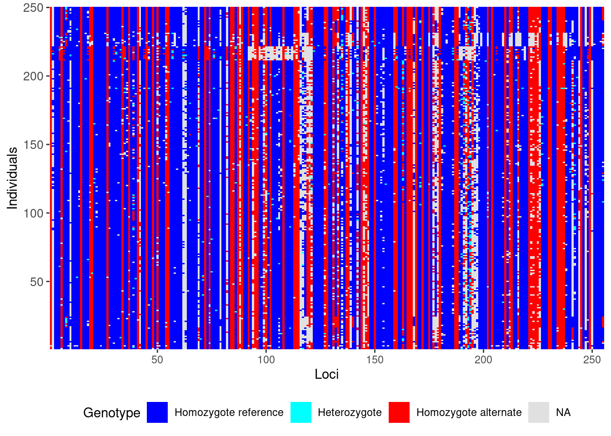

library(dartR.base)
library(dartR.data)1 Intro to dartR
Session Presenters
Required packages
make sure you have the packages installed, see Install dartRverse
dartR
From 1 package to 7

Introduction
An accessible genetic analysis platform for conservation, ecology and agriculture
dartRverse aims to support the installation of R packages of the dartRverse that are user-friendly and deliver a variety of analyses and pipelines on the one platform. Currently there are two core R packages that need to be installed to use dartR:
- dartR.base
- dartR.data
Additional packages are
- dartR.sim (functions to simulate SNP data)
- dartR.spatial (spatial analysis)
- dartR.popgenomics (popgenomics analysis)
- dartR.captive
- dartR.sexlinked
dartR is a collaboration between the University of Canberra, CSIRO and Diversity Arrays Technology, and is supported with funding from the ACT Priority Investment Program, CSIRO and the University of Canberra.

dartR’s Reach
Diversity Arrays Technology Pty Ltd (DArT)
Diversity Arrays Technology Pty Ltd (DArT) is a private company that specializes in genotyping by sequencing. Their approach is one of genome complexity reduction. Basically, DArTSeq is a method that extracts reproducible genomic variation across the genomes of many individuals at an affordable cost. The data are representational in the sense that they are generated for a random but reproducible selection of small fragments of sequence only, fragments that exhibit variation at the level of single base pairs (SNPs).
For more details check out the DArT website: https://www.diversityarrays.com/
You can also learn more about the methods by checking out the tutorial on Data Structure and Input found in the dartR Tutorials section.
Their mission:
The magical world of RStudio Cloud
Step 1: Summoning the RStudio Cloud Portal
Embark on the Journey: Open your trusty steed (a.k.a. your web browser) and gallop over to Rstudio Cloud.
Forge Your Credentials: Spot the “Sign Up” beacon in the realm’s upper right corner and click it with courage. Click on the “Learn more” below the “Cloud Free” plan and then in the “Sign Up” button. A scroll will appear, asking for your name, your secret code (password), and your e-mail. Please use the same e-mail you provided when you registered to the workshop.

- Prove Your Worth: After submitting your details, a pigeon (or was it an email?) will fly into your inbox carrying a secret message. Click the link within to prove you’re not a goblin in disguise.
Step 2: Entering the Secret Workshop Chamber
Return to the Portal: With your email now verified, make your way back to the RStudio Cloud realm and use your newly forged credentials to enter.
Finding the Secret Door: One day before the workshop, a link leading to the workshop’s chamber will be sent to your e-mail.
Step 3: Joining the Fellowship of the Project
- Locate the Treasure Chest: Within the grand chamber (workshop space), seek the project “PopGenR” and click on it to reveal its secrets. As you open it for the first time, ancient RStudio Cloud spirits will work their magic to prepare your environment.
dartR fundamentals
The structure of a genlight object

For a detailed rundown of the genetic data used by the dartRverse, check out the tutorial on Data Structure and Input found in the dartR Tutorials section.
the Basics
Here is a glimpse at the functions we will be using. Please follow along, or try running the code on your own.
testset.gl
gl <- testset.gl
nInd(gl)
nLoc(gl)
nPop(gl)
popNames(gl)
indNames(gl)
locNames(gl)
table(pop(gl))
as.matrix(gl)[1:7,1:5]testset.gl /// GENLIGHT OBJECT /////////
// 250 genotypes, 255 binary SNPs, size: 752 Kb
7868 (12.34 %) missing data
// Basic content
@gen: list of 250 SNPbin
@ploidy: ploidy of each individual (range: 2-2)
// Optional content
@ind.names: 250 individual labels
@loc.names: 255 locus labels
@loc.all: 255 alleles
@position: integer storing positions of the SNPs
@pop: population of each individual (group size range: 1-11)
@other: a list containing: loc.metrics latlong ind.metrics history loc.metrics.flags
Quiz!
 This quiz is referring to the
This quiz is referring to the testset.gl data set you have interrogated above.
Type the correct number into the blank boxes below:
- number of SNPs
- number of individuals
- number of populations
boxes will go green if you have the answer correct
Reporting and Filtering
gl.set.verbosity(3)
gl.report.callrate(gl) # loci callrate
gl.report.callrate(gl,method="ind") # individual callrate
gl.report.reproducibility(gl) # reproducibility
# filter
gl.filter.callrate(gl,method ="ind", threshold=0.8)gl.report.callrate(gl)Starting gl.report.callrate
Processing genlight object with SNP data
Reporting Call Rate by Locus
No. of loci = 255
No. of individuals = 250
Minimum : 0.056
1st quartile : 0.912
Median : 0.984
Mean : 0.8765804
3r quartile : 1
Maximum : 1
Missing Rate Overall: 0.1234 Completed: gl.report.callrate gl.report.callrate(gl,method="ind")Starting gl.report.callrate
Processing genlight object with SNP data
Reporting Call Rate by Individual
No. of loci = 255
No. of individuals = 250
Minimum : 0.7490196
1st quartile : 0.8666667
Median : 0.8823529
Mean : 0.8765804
3r quartile : 0.8941176
Maximum : 0.9333333
Missing Rate Overall: 0.1234
Listing 30 populations and their average CallRates
Monitor again after filtering
Population CallRate N
1 EmmacBrisWive 0.8839 10
2 EmmacBurdMist 0.8808 10
3 EmmacBurnBara 0.8859 11
4 EmmacClarJack 0.8596 5
5 EmmacClarYate 0.8769 5
6 EmmacCoopAvin 0.7682 10
7 EmmacCoopCully 0.9122 10
8 EmmacCoopEulb 0.8702 10
9 EmmacFitzAllig 0.8973 10
10 EmmacJohnWari 0.8929 10
11 EmmacMaclGeor 0.8806 11
12 EmmacMaryBoru 0.8843 6
13 EmmacMaryPetr 0.8892 4
14 EmmacMDBBowm 0.8824 10
15 EmmacMDBCond 0.8855 10
16 EmmacMDBCudg 0.8878 10
17 EmmacMDBForb 0.8766 11
18 EmmacMDBGwyd 0.9050 9
19 EmmacMDBMaci 0.8773 10
20 EmmacMDBMurrMung 0.8890 10
21 EmmacMDBSanf 0.8914 10
22 EmmacNormJack 0.8725 6
23 EmmacNormLeic 0.8863 1
24 EmmacNormSalt 0.8706 1
25 EmmacRichCasi 0.8757 10
26 EmmacRoss 0.8706 10
27 EmmacRussEube 0.8612 10
28 EmmacTweeUki 0.8773 10
29 EmsubRopeMata 0.8345 5
30 EmvicVictJasp 0.8361 5
Listing 20 individuals with the lowest CallRates
Use this list to see which individuals will be lost on filtering by individual
Set ind.to.list parameter to see more individuals
Individual CallRate
1 AA063722 0.7490196
2 AA063726 0.7490196
3 AA063732 0.7647059
4 AA063720 0.7686275
5 AA063712 0.7686275
6 AA063708 0.7725490
7 AA063718 0.7764706
8 AA063710 0.7764706
9 AA063714 0.7764706
10 AA063716 0.7803922
11 AA032760 0.7960784
12 UC_00210 0.8196078
13 UC_00259 0.8196078
14 AA018494 0.8235294
15 UC_00206 0.8235294
16 AA019164 0.8274510
17 UC_00209 0.8313725
18 UC_00254 0.8313725
19 AA019159 0.8352941
20 UC_00126c 0.8352941
)Completed: gl.report.callrate gl.report.reproducibility(gl)Starting gl.report.reproducibility
Processing genlight object with SNP data
Reporting Repeatability by Locus
No. of loci = 255
No. of individuals = 250
Minimum : 0.959459
1st quartile : 1
Median : 1
Mean : 0.9981525
3r quartile : 1
Maximum : 1
Missing Rate Overall: 0.12 Quantile Threshold Retained Percent Filtered Percent
1 100% 1.000000 214 83.9 41 16.1
2 95% 1.000000 214 83.9 41 16.1
3 90% 1.000000 214 83.9 41 16.1
4 85% 1.000000 214 83.9 41 16.1
5 80% 1.000000 214 83.9 41 16.1
6 75% 1.000000 214 83.9 41 16.1
7 70% 1.000000 214 83.9 41 16.1
8 65% 1.000000 214 83.9 41 16.1
9 60% 1.000000 214 83.9 41 16.1
10 55% 1.000000 214 83.9 41 16.1
11 50% 1.000000 214 83.9 41 16.1
12 45% 1.000000 214 83.9 41 16.1
13 40% 1.000000 214 83.9 41 16.1
14 35% 1.000000 214 83.9 41 16.1
15 30% 1.000000 214 83.9 41 16.1
16 25% 1.000000 214 83.9 41 16.1
17 20% 1.000000 214 83.9 41 16.1
18 15% 0.997674 217 85.1 38 14.9
19 10% 0.994536 230 90.2 25 9.8
20 5% 0.984694 243 95.3 12 4.7
21 0% 0.959459 255 100.0 0 0.0
Completed: gl.report.reproducibility gl.filter.callrate(gl,method ="ind", threshold=0.8)Starting gl.filter.callrate
Processing genlight object with SNP data
Warning: Data may include monomorphic loci in call rate
calculations for filtering
Recalculating Call Rate
Removing individuals based on Call Rate, threshold = 0.8
Individuals deleted (CallRate <= 0.8 ):
AA032760[EmmacMDBMaci], AA063718[EmmacCoopAvin], AA063720[EmmacCoopAvin], AA063722[EmmacCoopAvin], AA063726[EmmacCoopAvin], AA063732[EmmacCoopAvin], AA063708[EmmacCoopAvin], AA063710[EmmacCoopAvin], AA063712[EmmacCoopAvin], AA063714[EmmacCoopAvin], AA063716[EmmacCoopAvin],
Summary of filtered dataset
Call Rate for individuals > 0.8
Original No. of loci : 255
Original No. of individuals: 250
No. of loci retained: 255
No. of individuals retained: 239
No. of populations: 29 Note: Locus metrics not recalculated
Note: Resultant monomorphic loci not deleted
Completed: gl.filter.callrate
Tip
Remember, you can always look up the help file for dartRverse functions by putting a question mark (?) before a function. For example: ?gl.filter.callrate
Make sure you have the associated library loaded (eg. libary(dartR.base))
Now, lets take a look at our genetic data before and after filtering using the gl.smearplot() function.
gl <- testset.gl
gl.smearplot(gl) # Before Filtering
gl <- gl.filter.callrate(gl,verbose=0)
gl <- gl.filter.callrate(gl, method= "ind",
threshold=0.80, verbose=0)
gl.smearplot(gl) # After Filtering Processing genlight object with SNP data
Starting gl.smearplot 
Completed: gl.smearplot Processing genlight object with SNP data
Starting gl.smearplot Completed: gl.smearplot Filtering strategies
There is no right filtering order. Your data set will need its own interrogation, so be iterative - test different options. In some cases you may even need to reuse a filter that you used earlier on in the filtering process.
Instead of providing a recipe to follow, I recommend strategies to filtering.
First, lets have a closer look at what some of these filters do (click across the tabs for more insight into each filter):
gl.filter.callrate(method = loc) # Call rate by loci (SNPs)
gl.filter.callrate(method = ind) # Call rate by individuals
gl.filter.reproducibility() # reproducibility
gl.filter.rdepth() # read depth
gl.filter.maf() # minor allele frequency
gl.filter.secondaries() # secondaries gl.filter.callrate(gl, method = "loc", threshold = 0.95)
What is it? Removes SNPs with too much missing data based on a specified threshold.
Why is it important? Missing loci can add “noise” and computation time to an analysis
Key Considerations:
- Trade-off between strength of filter and number of loci
- Call rate filters matter for different metrics
gl.filter.callrate(gl, method = "ind", threshold = 0.95)
What is it? Removes individuals with too much missing data based on a specified threshold.
Why is it important? Deletes the key thing you need to do a study, and removes individuals that may be misleading as they are sequencing outliers
Key Considerations:
- The filtering step that costs you the very most amount of money
- Generally not a first step – recommend filtering lightly here in the first go and seeing if other filters improve the individuals completeness
gl.filter.reproducibility()
What is it? Diversity Arrays duplicates individuals during library prep, to assess whether the same answer is found for every locus ~ a control.
Why is it important? Provides confidence in your base calls which is pretty fundamental
Key Considerations:
- If reproducibility is low, you need your SNPs re-assessed
- If doing sequencing through AGRF or other facilities, make sure to include duplicated individuals (this is an additional cost but do it anyway)
gl.filter.rdepth()
What is it? The mean number of sequencing reads for a particular locus, across all individuals.
Why is it important? The number of reads in a stack tells you how confident you can be in your base calls and a low read depth means that your heterozygous sites have pretty low coverage.
Key Considerations:
- If your read depth is not high enough, there are questions you can’t confidently answer (e.g., heterozygosity)
- Very high read depth suggests paralogs (genes with multiple copies) being assembled in to one fragment
gl.filter.maf()
What is it? Minor allele frequency (maf) is the frequency of the second most common allele in a given population, so this filter removes SNPs based on their relative proportion.
Importantly, in the literature, it is often set to 0.05 BUT…
Key Considerations:
- 0.05 can be high if you have lot of individuals
- If you have 300 diploid individuals, then you delete SNPs with less than 30 copies of the minor allele
- Or singleton if you have a small number of individuals
- Should depend on your question
- Rare alleles can be very important to certain questions
- Most SNPs are rare alleles, as are most heterozygous sites
- Rare alleles are important in expansion processes
- NOT important in structure or phylogenetic analyses
gl.filter.secondaries()
What is it? When there are two SNPs on a single fragment, choosing to keep only one.
Why is it important? Loci that are very close together in the genome are not independently inherited as they are too close together for recombination to split, so they tend to be inherited together.
Key Considerations:
- Can mislead structure and phylogenetic analyses
- Can improve representations of heterozygosity
Strategies
Now for some strategies,
as a starting point I would get rid of loci I don’t believe in and then individuals that didn’t work properly at all:
gl <- platypus.gl # example data from dartR.data
gl <- gl.filter.callrate(gl, method = "loc", threshold = 0.7)
# Get rid of really poorly sequenced loci, but don’t cut hard
gl <- gl.filter.callrate(gl, method = "ind", threshold = 0.25)
# Very low filter – this is only to get rid of your really bad
# individuals
gl <- gl.filter.monomorphs(gl)
# Always run this after removing individuals – removes loci that are no
# longer variable
gl <- gl.filter.reproducibility(gl)
# Get rid of unreliable loci
gl <- gl.filter.rdepth(gl, lower = 5, upper = 500)
# Get rid of low and super high read depth lociThen I would filter more strongly as appropriate for my question. For a population structure analysis I would,
gl <- gl.filter.callrate(gl, method = "loc", threshold = 0.95)
# Structure dislikes missing data
gl <- gl.filter.maf(gl, threshold = 1/(2*nInd(gl)))
# I usually set up the threshold so it is just removing singletons to
# improve computation time
gl <- gl.filter.secondaries(gl)
# Always do this as the last loci filter so that you’ve cut for quality
# before you cut because there are two SNPs
gl <- gl.filter.callrate(gl, method = "ind", threshold = .9)
# Filter on individuals. You can usually be a bit flexible at this
# point.
gl <- gl.filter.monomorphs(gl)
# Always run this after removing individuals
More tips
Keep these tips in mind when you go to filter your own data:
- Be flexible
- Know what each filter is doing to your data
- Think carefully about whether the filter is appropriate to the test you want to run
- Analyse your data many different ways
- Don’t over-interpret your PCoA
Exploring functions
Exercise
 Try some of these report, subset, and filtering functions on your own.
Try some of these report, subset, and filtering functions on your own.
Reporting
gl.report.callrate()
gl.report.reproducibility()
gl.report.secondaries()
gl.report.rdepth()
gl.report.monomorphs()
gl.report.overhang()
gl.report.hamming()
gl.report.overshoot()Subsetting
gl.keep.ind()
gl.drop.ind()
gl.keep.loc()
gl.drop.loc()
gl.keep.pop()
gl.drop.pop()
gl.merge.pop()
gl.subsample.ind()
gl.subsample.loc()filtering
gl.filter.callrate()
gl.filter.reproducibility()
gl.filter.secondaries()
gl.filter.rdepth()
gl.filter.monomorphs()
gl.filter.overhang()
gl.filter.hamming()
gl.filter.overshoot()Further Study
For more tuturials see the dartR Tutorials section.
Readings
Gruber et al. (2018)
Mijangos et al. (2022)
Jaya et al. (2022)
Sopniewski and Catullo (2024)